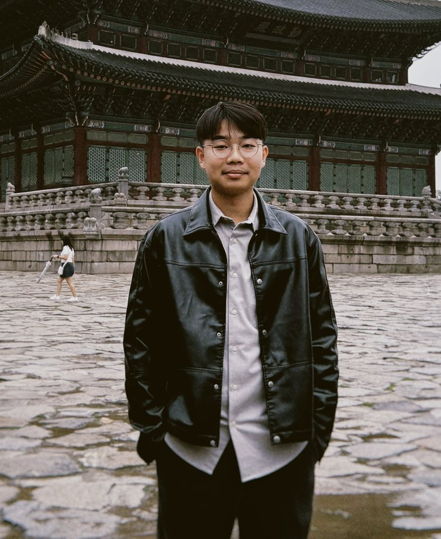
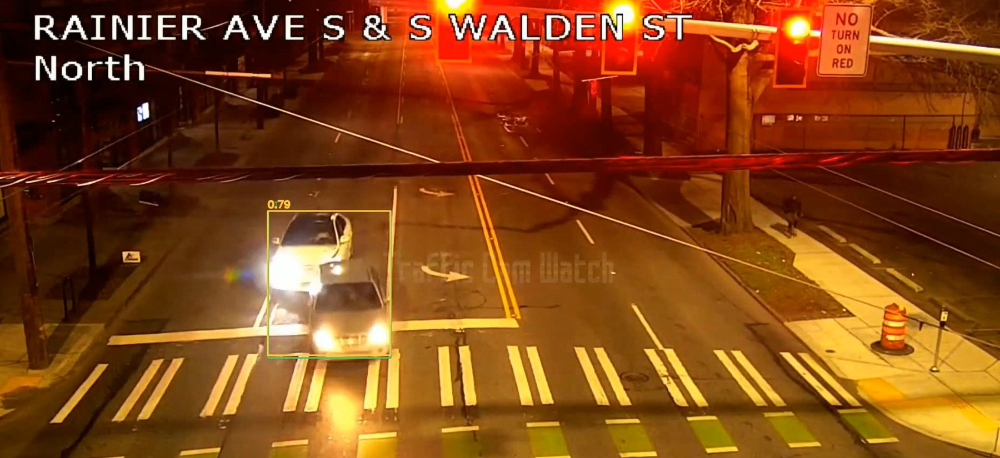

築景都更
目前實習工程師 · AI 導入
- 運用 LLM 自動擷取謄本內容，將資料結構化、儲存並整合資料庫應用。
- 以 Ollama 與 Qwen3.5 9B，在 RTX 5060 Ti 16GB 上建立輕量的本地部署流程。
- 120 頁謄本的專案案例中，掃描至匯出約 60 分鐘，原人工整理流程約需兩週。
文件擷取 → 結構化資料 → 資料庫應用
AI 研究 × 軟體實作
北科大人工智慧碩士生 · AI 實習工程師
專注於交通事件偵測、文件 AI 與本地模型部署。目前在築景都更推動謄本電子化，同時研究如何結合物件偵測與時序資訊辨識路口事故。預計 2027 年 7 月畢業。

實習工程師 · AI 導入
文件擷取 → 結構化資料 → 資料庫應用
助理工程師 · 實習
承攬程式設計講師 · 高雄
碩士研究 · 電腦視覺 × 時序資訊
使用公開 ACCIDENT 資料集，研究結合物件偵測與時序資訊的事件偵測方法，聚焦路口交通事故的辨識。

實務應用組 · 決賽入圍 · 主要負責人
與北科大 AI 碩士班李建樂老師實驗室（LeeLab / CureLab）團隊參賽，個人負責架構設計與開發。競賽結果預計於 2026 年 12 月底公布。
以判決書文本為題的分類專案，負責 CNN、神經網路與遺傳演算法模型訓練。
以 Python 建立自駕模擬個人專案，可繪製地圖、設定起點，進行碰撞偵測與世代演化訓練。
與主管共同開發的線上舉手教室，使用 Express 與 Socket.IO 管理教室、學生連線及舉手佇列。